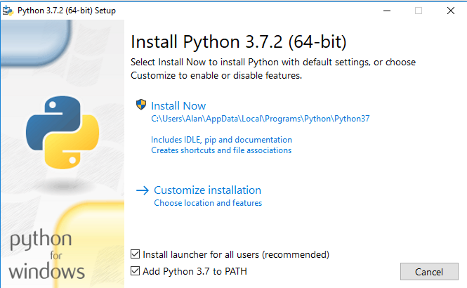

Installing Python Banyan
Checking For An Existing Python Installation
The first step in installing Python Banyan is to make sure you have Python installed on your computer. Python Banyan is both Python 2 and Python3 compatible, so if either version is installed on your computer, you are ready to start using Python Banyan.
If you need to install Python on your system, then Python 3 is recommended.
To check to see if you already have Python installed on your computer, open a command window and type:
python -V
or
python3 -V
You should see something similar to this screenshot:

Installing Python 3
If you need to install Python3 on your computer, use the latest version of Python 3 available. As of this writing, that version is 3.7.2. If you have an earlier version already installed, upgrading to Python 3.7.2 is not necessary.
Windows Users
To install Python 3.7.2 or later, go to the Python home page, and download the 3.7.2 (or later) distribution for your operating system.
If you have Python 2.7 installed, you do not need to remove it.
During the installation process, if there is a checkbox to add Python 3.7 to your path, make sure it is checked before proceeding with the installation.

Debian Based Linux Distribution Users
To build the latest version of Python (version 3.8.1 at the time of this writing) for Debian based Linux releases, such as Ubuntu, Raspbian, etc., use the following build instructions:
- sudo apt-get update
- sudo apt-get upgrade
- sudo apt-get dist-upgrade
- sudo apt-get install build-essential python-dev python-setuptools python-pip python-smbus
- sudo apt-get install build-essential libncursesw5-dev libgdbm-dev libc6-dev
- sudo apt-get install zlib1g-dev libsqlite3-dev tk-dev
- sudo apt-get install libssl-dev openssl
- sudo apt-get install libffi-dev
- cd ~
- mkdir build
- cd build
- wget https://www.python.org/ftp/python/3.8.1/Python-3.8.1.tgz
- tar -zxvf Python-3.7.2.tgz
- cd Python-3.7.2
- ./configure
- make
- sudo make install
Install pip For Debian based distributions:
sudo apt-get install pip3-python
Non-Debian Based Linux Distribution Users
Check with your distribution provider for the latest versions of Python.
Mac Users
- Install Python 3.7.2 from https://www.python.org/downloads/ or via homebrew
- Download get-pip.py from https://bootstrap.pypa.io/get-pip.py and install (this should already be installed if Python was installed from python.org or homebrew):
curl -O https://bootstrap.pypa.io/get-pip.py
sudo python3 get-pip.py
Verify The Python Installation
Refer to "Checking To See If Python Is Installed," above.
Installing Python Banyan
To install Python Banyan on Linux and Mac computers, open a terminal window and type:
sudo pip3 install python-banyan
NOTE For Raspberry Pi Users: When initially installing Python Banyan, it may take approximately 10 minutes to install. The installation requires some compilation.
For Windows users type:
pip install python-banyan
The code for Python Banyan can be found on GitHub.
Copyright (C) 2017-2020 Alan Yorinks All Rights Reserved